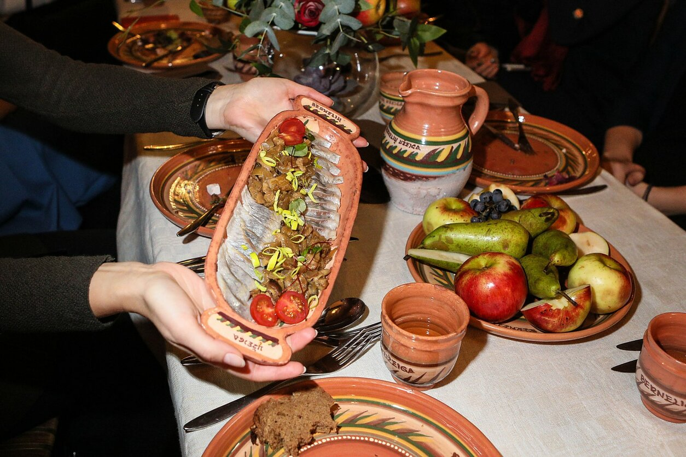

Ritos receptai : Laužo ir grilio patiekalai
- Receptai su nuotraukomis | Patiekalai | Receptas
Posts about RIMTI PATIEKALAI written by AML. Mityboje man svarbiausia balansas ir įvairovė, o valgydama siekiu pamaitinti ne tik alkį, bet ir kūną. - Varškės patiekalai – Saulėta virtuvė
patisonų receptai. Patiekalai su patisonais. Gaspadinė tau atrinko geriausius receptus. Kiekvienas receptas vertas dėmesio. - Receptai | Patiekalai
Patiekalai iš faršo gali atrodyti kaip įprastas kasdienis patiekalas, tačiau, iš tiesų, viskas priklauso nuo fantazijos ir pateikimo būdo. Jeigu užkepsime faršą su bulvėmis ir kitomis daržovėmis orkaitėje arba iškepsime lazaniją, kuri neįsivaizduojama be skanaus faršo – tai bus puikus šventinių pietų ar vakarienės ... - Receptai su patisonais, patiekalai iš patisonų | Gaspadine.lt
Pavasariniai patiekalai. Atėjus pavasariui norisi lengvų patiekalų, o trumpėjančios dienos skatina ieškoti vis paprastesnių receptų. Mes garantuojame, kad čia esantys pavasariniai patiekalai bus gaivūs ir labai greiti. - Pagrindiniai patiekalai - 1000receptų.lt
Receptai, patiekalai, receptas ir jo gaminimas su nuotraukomis. Populiariausių lietuviškų valgių patiekalai su nuotraukomis. - Ritos receptai : Laužo ir grilio patiekalai
Skanių patiekalų receptai: užkandžiai, sriubos, mėsos patiekalai, žuvies patiekalai, daržovių patiekalai, makaronai, stalo puošimas - Mėsa, mėsos patiekalai - receptai - Receptai | Patiekalai
Varškės patiekalai. Blynai KARŠTIEJI PATIEKALAI LENGVI KĄSNELIAI Pusryčiai Varškės patiekalai Paprasčiausi kepti varškėčiai. Asta 29 Rgs ’20. Varškė – tas pieno produktas, kurį visada rastumėte mūsų šeimos šaldytuve, o varškėčiai – patiekalas, kurį kas savaitę sąžiningai įrašau į mūsų savaitės meniu. Skanu ... - Pavasariniai patiekalai - Maisto Kelionės
RECEPTAI, kurie įkvėps Jus gaminti! Čia jų rasite itin daug iš įvairiausių pasaulio šalių ir vietovių. Geri ir aiškiai aprašyti receptai, taip pat video receptai, kurie padės Jums pasigaminti ir ant stalo patiekti tik pačius skaniausius bei gardžiausius patiekalus! Geriausia vieta mėgstantiems gaminti. - Mėsos patiekalai - skaniausi ir lengviausi receptai ...
be gliuteno, be karvĖs pieno, be kiauŠiniŲ, paukŠtiena | mĖsa, rimti patiekalai, sriubos. 3 receptai su rudens derliumi. 2020-09-04 2020-09-10 sukurta aml 3 receptai su rudens derliumi komentarų: 2. - RIMTI PATIEKALAI – ANT MEDINĖS LENTELĖS
Mėsos patiekalai „Dešra butelyje“: paprastas ir skanus kitokios dešros receptas. Mėsos patiekalai. Nuostabaus skonio mėsos kepsnys: puikiai tiks ir romantiškai vakarienei! Redaktorė L.-9 rugsėjo, 2020. 0. Mėsos patiekalai. Gardžiai kvepiantys ir sultingi kotletai su cukinija. Puikus receptas!
Ritos receptai
Rodomi pranešimai su žymėmis Laužo ir grilio patiekalai . Rodyti visus pranešimus Rodomi pranešimai su žymėmis Laužo ir grilio patiekalai . Rodyti visus pranešimus
2019 m. birželio 17 d., pirmadienis
Gardieji ančiukų kulšelių kepsniai ant grotelių .Tobulas marinatas paukštienai.
Siūlau išbandyti labai skanių kulšelių ant grotelių receptą.Antieną reikėtų pradėti marinuoti prieš 2 valandas , idealu būtų 4 valandos.Visa patiekalo paslaptis yra geras marinatas.Garnyrui naudokite sezonines daržoves ,tinka viskas ką mėgstate ir kas jums yra skanu.Padažas paprastas ,bet vertas dėmesio.Puikiai tiks ir vištiena arba kalakutiena.Gaminimui 90 min
4-6 porcijos
Reikės :
2 pak. x 500 g ''Lapino puotos'' šviežių ančiukų kulšelių
Marinatui :
3 v.š. alyvuogių aliejaus
2v.š. Dijon garstyčių
1 laimo sultys
4 skiltelės česnako
šakelė šalavijo
šviežiai maltų pipirų mišinio
1 v.š. rudojo cukraus
2 a.š. druskos
Padažui :
4 v.š. natūralaus jogurto
2 v.š. pomidorų padažo
1 a.š rudojo cukraus
1 skiltelė česnako
šviežių krapų
Garnyrui :
pomidorų
agurkų
marinuotų svogūnų
apvirtų bulvių skiltelių
Gaminimas :
1.Iškaulintas kulšeles pamuškite mėsos muštuku.
2.Sumaišykite marinatui skirtus ingredientus ir ištepkite paukštieną.Dėkite į indą su dangčiu ir statykite į šaldytuvą.
3.Padažui skirtus ingredientus sumaišykite,ragaukite ir gardinkite pagal poreikius.
4.Kepkite ant grotelių iki gražiai apskrus abi pusės.Pabaigoje apkepkite virtas bulvių skilteles.
5.Tiekite su daržovėmis,bulvių skiltelėmis,marinuotais svogūnais ir padažu.
Skanių akimirkų !!!
Komentarų nėra: Siųsti el. paštu BlogThis! Bendrinti sistemoje „Twitter“ Bendrinti sistemoje „Facebook“ Bendrinti sistemoje „Pinterest“ žymės: Antiena , Laužo ir grilio patiekalai , Vištiena
2016 m. liepos 17 d., sekmadienis
Jautienos steikas
Mano puslapis FacebookeSteiko kepimo taisyklės yra labai paprastos.Trumpas kepimo laikas,labai karštas grilis arba storapadė grilio keptuvė ir šiek tiek laiko mėsai subręsti.Geros kokybės druskos,pipirų ir jokių marinavimų. Naudokite tik labai geros kokybės brandintą jautieną.
1 porcija
gaminimui 30 min.
1 vnt. 220 g ''Kitchen me'' Šviežias jautienos didkepsnis „RIB EYE“ be kaulo
kokybiškų šviežiai maltų pipirų
druskos
1 v. š. aliejaus
Garnyrui :
mėgstamų daržovių
virtų su lupena ir apkepintų bulvių
Aliejumi patepame mėsą.Iš abiejų pusių pabarstome šviežiai maltais pipirais.Keptuvę labai gerai įkaitiname ir dedame mėsą.Geriausiai naudoti grilio keptuvę ,jeigu tokios neturite naudokite storapadę keptuvę.Į grilio keptuvę aliejaus pilti nereikia ,o į paprastą truputėlį įpilkite.Mėsos nevartome ir kepame ant vienos pusės 3-4 min. , tada verčiam ir kepam ant kitos.Druską barstome ant apkepusios mėsos pusės.Kuo ilgiau mėsa kepa,tuo darosi kietesnė.Neperkepkite.Standartiškai kepimo laikas yra : vidutiniškai iškepęs kiekviena pusė 3-4 min. , labiau iškepęs 5 min. kiekviena pusė.Ant iškepusio steiko galite dėti po gabaliuką aromatingo sviesto su smulkintais krapais ir petražolėm.Bet tai nėra būtina.Iškepusį steiką dedame į lėkštę ,uždengiame ir leidžiame mėsytei pailsėti 5min..
Kepant ant griliaus galioja tokios pačios taisyklės kaip ir keptuvėje.
Steiką valgome su jūsų mėgstamomis daržovėmis ,salotomis ,puikiai tinka apkeptos bulvės.
Viską gaminkite su meile ir gera nuotaika ,skanaus !!!
Komentarų nėra: Siųsti el. paštu BlogThis! Bendrinti sistemoje „Twitter“ Bendrinti sistemoje „Facebook“ Bendrinti sistemoje „Pinterest“ žymės: Daržovės , jautiena , Kepsniai , Laužo ir grilio patiekalai
2016 m. gegužės 8 d., sekmadienis
Anties krūtinėlė ant griliaus
Mano puslapis FacebookeAnties krūtinėlė-išskirtinio skonio paukštienos delikatesas.Yra tam tikros taisyklės ruošiant šį gardumyną.Mėsytė bus minkšta ir sultinga,jeigu jos neperkepsite.Kepti reikia kuo trumpiau. Noriu pasidalinti labai skaniu paukštienos marinavimo receptu,kurį dažnai naudoju prasidėjus grilio sezonui.Jis tikrai yra ypatingas .Mėsa būna labai sultinga ir aromatinga.Tam tikslui pasiekti reikės sudėti visus privalomus ingredientus.
Gaminimui 40-60 min. ( marinavimui 2 val. )
2 -3 porcijos
1 pakuotė 500 g ''Lapino puota'' Šviežios ančiukų file su oda
Marinatui :
200 ml grietinėlės 35% riebumo
200 ml apelsinų sulčių
1 apelsino žievelė
2 v.š. sojos padažo
2 v.š. saldaus aitriųjų paprikų padažo Chili sweet sauce
2 a.š. garstyčių
2 v.š. alyvų aliejaus
po šakelę šviežių prieskonių čiobrelio ,baziliko, rozmarino
pipirų
druskos pagal skonį
Garnyrui tinka :
cukinijos
pomidorai
baklažanai
paprika
druska,pipirai,česnakas,alyvų aliejus
Marinavimas:
1.Visus marinatui išvardintus ingredientus sumaišome.
2.Anties krūtinėlės odelę švelniai įpjauname įstrižai 4-5 kartus.Tik nepjaukite per giliai.
3.Dedame krūtinėles į marinatą ,odelėmis į viršų ,uždengiame ir laikome bent 2 val.Geriausiai marinuoti per naktį.
Kepimas:
1.Pasiruošiame vidutinio kaitrumo grilių.
2.Dedame anties krūtinėles odele žemyn 2-3 min. kol odelė bus traški.
3.Apverčiame krūtinėles į kitą pusę ir kepame dar 5-6 min.
4. Nuėmus nuo grotelių uždengiame ir duodame mėsai 10 minučių ''pailsėti'' .
5.Daržoves supjaustome maždaug griežinėliais arba išilgai juostelėmis.Jeigu naudosite papriką pjaustykite dideliais trikampiais.Nurodytus prieskonius išmaišome ir gautu mišiniu ištepame daržoves.
6. Dedame daržoves ant grotelių ir trumpai kepame iš abiejų pusių .Ant grotelių pirmiausiai dedama pomidorai,paprika,o vėliau ,nes labai greitai apkepa,-baklažanų ir cukinijų griežinėliai.
Iškeptas anties krūtinėles patiekiame su keptomis daržovėmis ir Chili sweet padažu.Skanių akimirkų ir nepamirškite pagrindinio ingrediento - žiupsnelio meilės :)
Komentarų nėra: Siųsti el. paštu BlogThis! Bendrinti sistemoje „Twitter“ Bendrinti sistemoje „Facebook“ Bendrinti sistemoje „Pinterest“ žymės: Antiena , Daržovės , Laužo ir grilio patiekalai
2015 m. birželio 15 d., pirmadienis
Šokoladinis pyragas žarijose
Kodėl neišsikepus šokoladinio pyrago miške ? Puiki pramoga ir nuostabus desertas poilsiaujant gamtoje,sodyboje ar tiesiog namuose .Visur kur tik turite kepsninę ar laužavietę . Senokai mano užmatytą idėją pagaliau prisiruošiau įgyvendinti.Ypatingai smagus užsiėmimas jūsų mažiesiems smaližiams :) Viskas labai lengvai ,greitai ir paprastai. 25-30 min ir aplinkui pasklis nuostabus apelsinų ir šokolado aromatas :) Beliks tik mėgautis drėgnu ,aromatingu desertu.O kur dar ruošimo ir laukimo džiaugsmai.
Reikės:
šokoladinio pyrago mišinio ( naudojau Malsenos )
4 didelių apelsinų
folijos
Kuriame laužą ar kepsninę ,nes mums reikės žarijų.
Nupjauname apelsino viršūnėlę taip kaip padaryta nuotraukoje .
Šaukštu išskobiame minkštimą.
Pagal aprašymą ant pakuotės paruošiame pyrago mišinį.Jums tereikės 100 g tirpinto sviesto arba aliejaus ir nurodytą kiekį vandens.
Paruošta tešla užpildome apelsinus .Nepripilkite iki viršaus , nes pyragas iškils .Jeigu apelsinai mažesni gali išeiti ir daugiau nei 4 porcijos.Tada kepimo laiką reikia sutrumpinti.
Pripildytus apelsinus uždengiame nupjautomis viršūnėlėmis ir atsargiai vyniojame į foliją.Iš folijos galų suformuojame uodegėles ,bus lengviau ištraukti iš žarijų.
Apelsinus dedame į paruoštas žarijas .Gerai būtų ,kad apelsinai neapsiverstų ir tešla neišbėgtų .
Kepimo laikas 25-30 min. Po 20 min. pasklidus aromatui ištraukite vieną apelsiną ir patikrinkite. Jeigu dar neiškepęs dėkite atgal ir kepkite dar apie 10 min. Kepimo laikas priklauso ir nuo apelsinų odos storio ir nuo jų dydžio.Svarbiausiai nesudeginkite !!! Prie pyrago mišinio yra pridėta pakuotė šokoladinio užpilo , kurį galite pasiruošti pagal instrukciją . Jeigu kartais turėtumėte vanilinių ledų būtų TOBULA :) Malonaus poilsio vasarojant ir gardžių akimirkų smaguriaujant pyragą !!!
4 komentarai: Siųsti el. paštu BlogThis! Bendrinti sistemoje „Twitter“ Bendrinti sistemoje „Facebook“ Bendrinti sistemoje „Pinterest“ žymės: Laužo ir grilio patiekalai , pyragai
2013 m. rugpjūčio 29 d., ketvirtadienis
Šašlykas obuolių sulčių marinate
Reikės :kiaulienos mentės
naminių obuolių sulčių
druskos
svogūnų
prieskonių mišinio ( kalendra ,raudonėlis ,bazilikas ,pipirai,salierai )
Mėsą supjaustome ,įtriname druska ir prieskoniais ir paliekame kelias valandas pastovėti. Pastovėjusią mėsytę užpilame obuolių sultimis ir paliekame per naktį.Likus porai valandų iki kepimo sutarkuojame svogūnus ir išmaišome su mėsa.Viskas , labai skanu, tirpsta burnoje ,obuolių sultys puikiai atliko savo darbą .
Skanaus !!!
Laukiame mes jo ar ne ,rudenėlis jau ant nosies ...
Rykštenės Komentarų nėra: Siųsti el. paštu BlogThis! Bendrinti sistemoje „Twitter“ Bendrinti sistemoje „Facebook“ Bendrinti sistemoje „Pinterest“ žymės: kiauliena , Laužo ir grilio patiekalai
2013 m. rugpjūčio 18 d., sekmadienis
Ant žarijų kepti obuoliai ;)
Tiesiog imate obuolius ,veriate ant iešmo ir kepate ant žarijų kol suminkštės ,tik nesudeginkite, tinka ir prie mėsos.Galima prieš pabaigą apibarstyti cukrumi ir pakepti kol karamelizuosis . Paprasta ir laabai skanu :)skanaus !!!
Mano Facebook puslapis : čia Komentarų nėra: Siųsti el. paštu BlogThis! Bendrinti sistemoje „Twitter“ Bendrinti sistemoje „Facebook“ Bendrinti sistemoje „Pinterest“ žymės: desertai , Laužo ir grilio patiekalai
2013 m. liepos 3 d., trečiadienis
Karbonadas ant grotelių
Viskas labai paprasta ir skanu :)Karbonadinės kiaulienos
česnako
pipirų
druskos
majonezo
mėgstamų prieskoninių žolelių
Garnyrui:
šampinjonų
mėgstamų daržovių
bulvių ar ryžių
Kiaulienos karbonadus supjaustome apie 1,5 cm. storio kepsniais .Aš naudojau kiaulieną su riebaliuku ,labai skanu ,apskrudęs lašinukas tikras skanumėlis. Mėsytę išmušame ,pabarstome pipirais ,druska ,spaustu česnaku ir užberiame mėgstamų prieskoninių žolelių ,aš naudojau raudonėlį ir kalendrą .Gerai įtriname ir plonai patepame majonezu.Paliekam marinuotis ,geriausiai per naktį.Marinuotą mėsą dedame ant grotelių ,šalia dedame druska įtrintus šampinjonus ir kepame . Grybukai gauna mėsos sulčių ir būna labai gardūs.Tiekiame su bulvėmis arba ryžiais ,daržovėmis .Skanaus :)
Aš Facebooke : čia
Dusios ežero gyventojai
Saulei nusileidus ,vaizdas nerealus ...
Komentarų nėra: Siųsti el. paštu BlogThis! Bendrinti sistemoje „Twitter“ Bendrinti sistemoje „Facebook“ Bendrinti sistemoje „Pinterest“ žymės: Kepsniai , kiauliena , Laužo ir grilio patiekalai
2013 m. birželio 30 d., sekmadienis
Kiaulienos šašlykas
2 kg. kiaulienos mentės arba sprandinėskeli šaukštai garstyčių
keli šaukštai pomidorų padažo
5 dideli svogūnai
kelios skiltelės česnako
truputį druskos
baziliko
džiovintų salierų lapų
kalendros
juodų pipirų
raudonėlio
Paruošimas :
Mėsą supjaustome gabaliukais, dedame prieskonius , pusžiedžiais pjaustytus svogūnus,česnaką ,džiovintus prieskonius ,druską ,garstyčias,pomidorų padažą.Toliau linksmoji dalis : apie 15 min. mėsos ''masažo''. Laikome parą arba trumpiausiai 5-6 val. Tiekiame su ant grotelių keptomis bulvėmis ir daržovėmis.Bulvės prieš tai buvo išvirtos.Labai minkšti,sultingi ,tirpsta burnoje :) Skanaus !!!
2 komentarai: Siųsti el. paštu BlogThis! Bendrinti sistemoje „Twitter“ Bendrinti sistemoje „Facebook“ Bendrinti sistemoje „Pinterest“ žymės: kiauliena , Laužo ir grilio patiekalai
2013 m. birželio 29 d., šeštadienis
Tortilijos ant grotelių
6 nedideles tortilijas ( naudojau ''Santa Maria'' )raudoną svogūną
pusę nedidelio Pekino kopūsto
2 agurkus
2 pomidorus
kiaulienos šašlyko ( puikiai tinka vakarykštis )
Gėrimo receptas : čia
Padažui:
apie 3 šaukštus majonezo
2 šaukštų pomidorų padažo
2 skiltelės česnako
mineralinio vandens arba kefyro,nat. jogurto
galite derinti proporcijas pagal savo skonį
Paruošiame padažą ,susmulkiname daržoves ,plonais griežinėliais supjaustome šašlyką ,žiedais supjaustome svogūną.Tortilijas patepame padažu ,dedame Pekino kopūstą ,šašlyką,svogūną ,pomidorus ,agurkus.Apačią užlenkiame ,kad neišbėgtų padažas tada lenkiame šonus ir sutvirtiname mediniu smeigtuku.Paruoštas tortilijos dedame ant grotelių ir kepame labai trumpai kol gražiai apskrus .Daržovių ir padažo kiekį derinkite pagal savo skonį. Labai greitas ir nerealiai skanus užkandis .Skanaus !!!
Dusios ežeras vienas didžiausių ir švariausių ežerų Lietuvoje , pavyko užfiksuoti nerealiai gražius saulėlydžius
Aš Facebooke : čia
4 komentarai: Siųsti el. paštu BlogThis! Bendrinti sistemoje „Twitter“ Bendrinti sistemoje „Facebook“ Bendrinti sistemoje „Pinterest“ žymės: Laužo ir grilio patiekalai , tortilijos , Užkandžiai Senesni pranešimai Pradinis puslapis Užsisakykite: Pranešimai (Atom)
Aš Instagrame
Prisijunkite paspaudus ant foto
Interneto puslapio peržiūrų skaičius
Foto ir tekstas yra mano nuosavybė.Kopijuoti ir platinti galima tik gavus mano sutikimą.
Rita Rodyti visą mano profilįKas ieško,tas ir randa ..
Draugai
Šeimos fotosesijaPopuliarūs receptai
Tortas ''Snickers'' Obuolių pyragas su švelniu grietinės kremu Naminiai mėsos konservai ( liaudiškai ''tušonkė'' ) Čirviniai blynai Kakavinis varškės pyragas .Tobulai skanus. Trupininis pyragas su juodųjų serbentų uogiene Naminiai vafliai ir namai kvepiantys vanile... Trupininis pyragas su obuoliene Varškiniai sausainiai ''Rožytės'' Tobulas marinatas paukštienai.Kepta antis.Kategorijos
Antiena (51) apkepas (8) Bandelės (2) Biskvitai (1) Blynai (8) Braškės (11) Crepes (6) Čatnis (1) Daržovės (41) desertai (8) Garnyras (5) Gėrimai (8) Grybavimo ypatumai (1) jautiena (23) Juodieji serbentai (6) kalakutiena (3) Keksas (4) Keksiukai (8) Kepsniai (7) kiauliena (15) Kiaušinių dažymas (4) Konkursas (2) Konservai (3) Kūčios-Kalėdos (23) Laužo ir grilio patiekalai (10) Lietiniai su įdaru (9) Lietuviški patiekalai (53) Maisto ruošimo (1) Makaronų patiekalai (6) Mano daržas (2) Nekepti saldumynai (19) Nesaldūs kepiniai (6) Pica (4) pyragai (42) Pyragaičiai (4) puošimo idėjos (1) Pusryčiai (12) saldumynai (9) salotos (29) Sausainiai (3) Silkė (6) Sriubos (18) Sušiai (1) Tortai (70) tortilijos (3) Triušiena (15) troškiniai (20) Uogos ir vaisiai (8) Užkandžiai (53) varškė (25) Velykos (33) Veršiena (1) Virtiniai (6) Vištiena (25) Žąsiena (1) Žuvis (18) Žvėriena (1)Translate
Naujienos paštu
Bendravimui
Tema „Vandenženklis“. Teikia „ Blogger “.



Mauris vulputate dolor
Rutrum fermentum nibh in augue praesent urna congue rutrum.
Etiam posuere